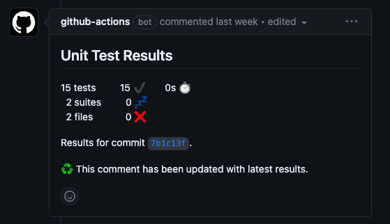

작성한 문서는 아래와 같습니다. 😁
Git Workflow 문서
name: CI Test
on:
push:
branches:
- main
- release
- develop
pull_request:
branches:
- main
- release
- develop
permissions:
contents: read
issues: read
checks: write
pull-requests: write
jobs:
test:
runs-on: ubuntu-latest
steps:
- name: Repository 가져오기
uses: actions/checkout@v3
- name: JDK 11 설치
uses: actions/setup-java@v1
with:
java-version: 11
distribution: "temurin"
- name: Gradle 명령을 위한 권한 부여
run: chmod +x gradlew
- name: Gradle Build 수행!
run: ./gradlew build
- name: 테스트 결과를 PR-Comment 로 등록
uses: EnricoMi/publish-unit-test-result-action@v1
if: always()
with:
files: "**/build/test-results/test/TEST-*.xml"
- name: 테스트 실패 시, 실패한 코드 라인에 Check Comment 를 등록
uses: mikepenz/action-junit-report@v3
if: always()
with:
report_paths: "**/build/test-results/test/TEST-*.xml"
token: ${{ github.token }}
JDK 11 - Temurin 사용 이유
자연스레 JDK 17을 사용하고 있었는데... 😓
해당 버전은 라이센스가 있어 추후에 문제가 있을 수 있다는 것을 알게되었습니다.
Temurin은 OpenJDK를 기반으로 무료 및 오픈소스 입니다.
그래서 많은 곳에서 사용되고 있어 이를 추천합니다.
EnricoMi 사용하기
테스트 결과를 분석하고 결과를 Github에 게시해주는 도구 입니다.

위와 같이 Pull Request 에서 확인할 수도 있고,
테스트 실패 시, 해당 실패 구문에 코멘트도 작성해줍니다.